第 13 章 表面间的辐射换热#
本章解决：第 12 章回答了"一个表面怎样发射、吸收、反射辐射"，这一章回答"多个表面之间怎么算总账"。两块表面能互相"看见"多少，由视角系数（view factor）这个纯几何量描述——它有互易关系与求和规则两条恒等式，配合图表和代数运算就能把常见几何的视角系数凑齐。真实表面按漫灰体处理：给每个表面配一个表面热阻、给每对表面配一个空间热阻，封闭腔内的辐射换热就变成一张纯电阻网络——两表面封闭腔有现成公式，三表面、再辐射面、防辐射屏各有标准的网络化简套路，对流与导热加入时在同一节点上做能量平衡。最后补两块：这套简化假定的适用边界，以及气体这类参与性介质的发射与吸收（比尔定律与 Hottel 图算法）。
13.0 本章导图#
13.1 视角系数#
到目前为止我们只盯着一个表面看辐射。现在的问题是：两个（或更多）表面之间到底交换多少辐射？答案强烈依赖表面的几何与朝向，也依赖各自的辐射物性和温度。本章先假设表面之间隔着不参与性介质（nonparticipating medium）——它既不发射、不吸收、也不散射辐射，对表面间的辐射换热毫无影响。真空严格满足这个要求，大多数气体也是极好的近似。
第一个目标就是把"几何"这一半量化，工具叫视角系数（view factor），又称构形因子或形状因子（configuration or shape factor），国内教材多称角系数。
13.1.1 视角系数积分#
视角系数 \(F_{ij}\) 的定义一句话：离开表面 i 的辐射中被表面 j 截住的份额。
要推出它的一般表达式，看图 13.1：两个任意朝向的表面 \(A_i\)、\(A_j\)，各取微元面 \(dA_i\)、\(dA_j\)，二者相距 \(R\)，连线与两个表面法线 \(n_i\)、\(n_j\) 的夹角分别是 \(\theta_i\)、\(\theta_j\)。\(R\)、\(\theta_i\)、\(\theta_j\) 都随微元面位置变化。
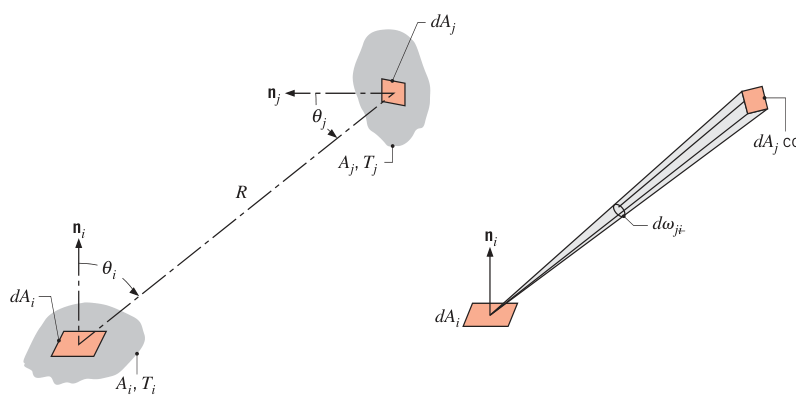
离开 \(dA_i\)、被 \(dA_j\) 截住的辐射速率，用第 12 章的辐射强度定义（式 12.11）写出：
其中 \(I_{e+r,i}\) 是表面 i 因发射加反射而离开的辐射强度，\(d\omega_{j-i}\) 是从 \(dA_i\) 看 \(dA_j\) 所张的立体角。立体角的几何由式 (12.7) 给出：\(d\omega_{j-i} = (\cos\theta_j\, dA_j)/R^2\)，代进来：
再假设表面 i 是漫发射、漫反射的，由式 (12.27)，\(I_{e+r,i} = J_i/\pi\)（有效辐射除以 π），于是：
把两个表面都积分，就得到离开 i、被 j 截住的总速率（假设有效辐射 \(J_i\) 在 \(A_i\) 上均匀）：
按定义，视角系数是这个总速率占离开 i 的全部辐射 \(A_iJ_i\) 的份额：
同样地，\(F_{ji}\) 是离开 \(A_j\) 的辐射被 \(A_i\) 截住的份额，同一路数推出来：
式 (13.1)、(13.2) 对任何两个漫发射、漫反射且有效辐射均匀的表面都成立——这是整章视角系数计算的物理前提。
13.1.2 视角系数关系#
真正让视角系数"能算"的，是下面几条恒等式。
互易关系（reciprocity relation）。式 (13.1) 和 (13.2) 的双重积分一模一样，让它们相等立刻得到：
知道一个视角系数，就能换出对面那个。注意互换的是乘积 \(AF\)，不是 \(F\) 本身。
求和规则（summation rule）。考虑由 \(N\) 个表面围成的封闭腔（enclosure）（图 13.2）。离开表面 i 的辐射必须全部落到封闭腔的某个表面上——这是能量守恒的几何版本：
求和里的 \(F_{ii}\) 是离开表面 i 又直接落回自身的份额：凹面能"看见"自己，\(F_{ii} \ne 0\)；平面或凸面看不见自己，\(F_{ii} = 0\)。
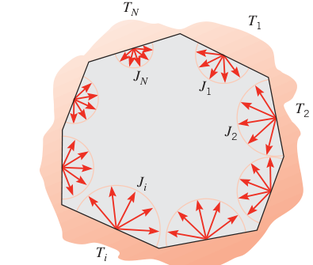
拓展：凹面自己能看见自己
\(F_{ii}\) 是初学者最容易忽略的一项。凹面（比如碗的内壁、圆管内表面、环形空腔的内侧）发出的一部分辐射会直接打到自己身上。举个例子：无限长同心圆柱之间的环形空腔，内柱外表面是凸面 \(F_{11} = 0\)，外柱内表面是凹面，它发出的辐射有一部分直接落回外柱——所以外柱内表面的 \(F_{22} < 1\)，两表面封闭腔里 \(F_{22} = 1 - A_1F_{12}/A_2\)（见下面的两球例子）。做求和规则时先问一句：这个面是凹的还是凸的？
数数：需要直接确定几个视角系数？ 对 \(N\) 个表面的封闭腔，配对数共 \(N^2\) 个（排成 \(N \times N\) 矩阵）。但不必都硬算：
- 求和规则给 \(N\) 条方程，解出 \(N\) 个视角系数；
- 互易关系可应用 \(N(N-1)/2\) 次，换出 \(N(N-1)/2\) 个；
- 剩下要直接确定的只有 \(N^2 - N - N(N-1)/2 = N(N-1)/2\) 个。
比如三表面封闭腔：只需直接定 \(3(3-1)/2 = 3\) 个，其余六个由三条求和规则加三条互易关系解出。
两个球组成的封闭腔（图 13.3）是这套流程的最小演示：内球面 1、外球壳内表面 2。离开内球的辐射全部打在外壳上，一看便知 \(F_{12} = 1\)；互易关系给出 \(F_{21} = (A_1/A_2)F_{12} = A_1/A_2\)；求和规则给 \(F_{11} + F_{12} = 1\)（\(F_{11} = 0\)，凸面）和 \(F_{21} + F_{22} = 1\)，于是 \(F_{22} = 1 - A_1/A_2\)。四个视角系数一个积分都没做。
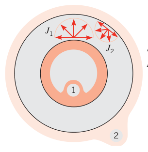
公式表与图表。更复杂的几何要动用式 (13.1) 的双重积分。很多常见构形的积分结果已经做成公式表和图表（表 13.1、表 13.2 与图 13.4—13.6）。表 13.1 的构形都在垂直于纸面的方向上无限长（二维问题），表 13.2 与图 13.4—13.6 是三维构形。
表 13.1 二维几何的视角因子（View Factors for Two-Dimensional Geometries，截自原书 Table 13.1）
| 几何 | 关系式 |
|---|---|
| 中线由垂直线相连的两平行长板（宽 \(w_i\)、\(w_j\)，间距 \(L\)） | \(F_{ij} = \dfrac{[(W_i + W_j)^2 + 4]^{1/2} - [(W_j - W_i)^2 + 4]^{1/2}}{2W_i}\)，\(W_i = w_i/L\)，\(W_j = w_j/L\) |
| 等宽、共边的倾斜长板（夹角 \(\alpha\)） | \(F_{ij} = 1 - \sin(\alpha/2)\) |
| 共边的两块垂直长板（宽 \(w_i\)、\(w_j\)，远端连线 \(w_k\)） | \(F_{ij} = \dfrac{1 + (w_j/w_i) - [1 + (w_j/w_i)^2]^{1/2}}{2}\) |
| 三面封闭腔（边长 \(w_i\)、\(w_j\)、\(w_k\)） | \(F_{ij} = \dfrac{w_i + w_j - w_k}{2w_i}\) |
| 不同半径的平行长圆柱（半径 \(r_i\)、\(r_j\)，轴间距 \(s\)） | \(F_{ij} = \dfrac{1}{2\pi}\Big\{\pi + [C^2 - (R+1)^2]^{1/2} - [C^2 - (R-1)^2]^{1/2} + (R-1)\cos^{-1}\Big[\dfrac{R-1}{C}\Big] - (R+1)\cos^{-1}\Big[\dfrac{R+1}{C}\Big]\Big\}\)，\(R = r_j/r_i\)，\(S = s/r_i\)，\(C = 1 + R + S\) |
| 长圆柱与平行的长矩形（半径 \(r\)，距离 \(L\)，两端距 \(s_1\)、\(s_2\)） | \(F_{ij} = \dfrac{r}{s_1 - s_2}\Big[\tan^{-1}\dfrac{s_1}{L} - \tan^{-1}\dfrac{s_2}{L}\Big]\) |
| 无限大平板与一排长圆柱（直径 \(D\)，间距 \(s\)） | \(F_{ij} = 1 - \Big[1 - \dfrac{D}{s}\Big]^{1/2} + \dfrac{D}{s}\tan^{-1}\Big[\Big(\dfrac{s^2 - D^2}{D^2}\Big)^{1/2}\Big]\) |
表 13.2 三维几何的视角因子（View Factors for Three-Dimensional Geometries，截自原书 Table 13.2）
| 几何 | 关系式 |
|---|---|
| 对齐的平行矩形（边 \(X \times Y\)，间距 \(Z\)；图 13.4） | 记 \(\bar{X} = X/L\)，\(\bar{Y} = Y/L\)：\(F_{ij} = \dfrac{2}{\pi \bar{X}\bar{Y}}\Big\{\ln\Big[\dfrac{(1+\bar{X}^2)(1+\bar{Y}^2)}{1+\bar{X}^2+\bar{Y}^2}\Big]^{1/2} + \bar{X}(1+\bar{Y}^2)^{1/2}\tan^{-1}\dfrac{\bar{X}}{(1+\bar{Y}^2)^{1/2}} + \bar{Y}(1+\bar{X}^2)^{1/2}\tan^{-1}\dfrac{\bar{Y}}{(1+\bar{X}^2)^{1/2}} - \bar{X}\tan^{-1}\bar{X} - \bar{Y}\tan^{-1}\bar{Y}\Big\}\) |
| 共轴平行圆盘（半径 \(r_i\)、\(r_j\)，间距 \(L\)；图 13.5） | 记 \(R_i = r_i/L\)，\(R_j = r_j/L\)，\(S = 1 + \dfrac{1 + R_j^2}{R_i^2}\)：\(F_{ij} = \dfrac{1}{2}\Big\{S - [S^2 - 4(r_j/r_i)^2]^{1/2}\Big\}\) |
| 共边的两块垂直矩形（\(X \times Z\) 与 \(Y \times Z\)；图 13.6） | 记 \(H = Z/X\)，\(W = Y/X\)：\(F_{ij} = \dfrac{1}{\pi W}\Big\{W\tan^{-1}\dfrac{1}{W} + H\tan^{-1}\dfrac{1}{H} - (H^2+W^2)^{1/2}\tan^{-1}\dfrac{1}{(H^2+W^2)^{1/2}} + \dfrac{1}{4}\ln\Big[\dfrac{(1+W^2)(1+H^2)}{1+W^2+H^2}\Big(\dfrac{W^2(1+W^2+H^2)}{(1+W^2)(W^2+H^2)}\Big)^{W^2}\Big(\dfrac{H^2(1+H^2+W^2)}{(1+H^2)(H^2+W^2)}\Big)^{H^2}\Big]\Big\}\) |
三张图表配这三个公式用——公式表落不了图的，查曲线：
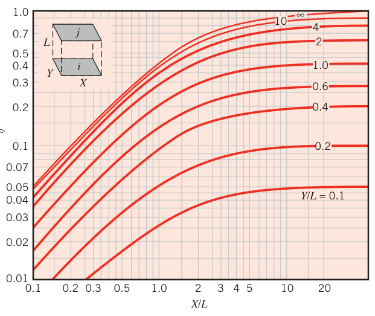
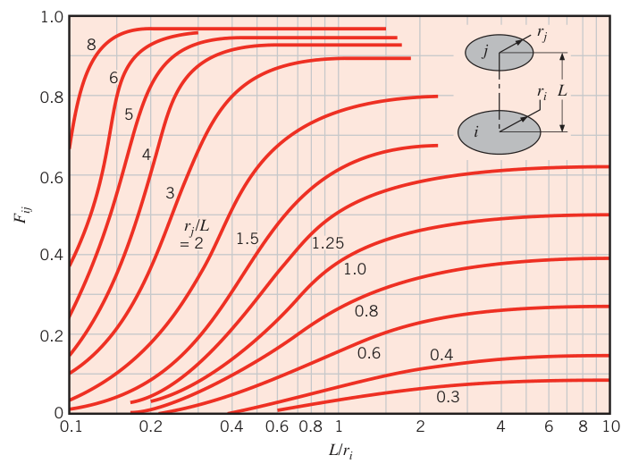
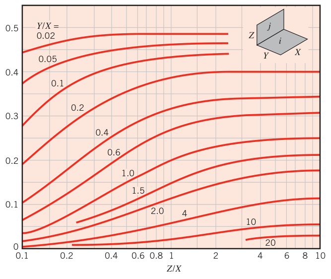
拓展：表 13.1 的公式从哪来——交叉弦法
表 13.1 里那些二维构形的公式，几乎全部出自 Hottel 的交叉弦法（crossed-strings method）：对两个二维表面（都垂直纸面无限长），把"看得见"的两条交叉连线与四个端点连成一组"弦"，视角系数就是几条弦长的代数组合除以 \(2w_i\)。它本质上是二维情形下互易关系与能量守恒的几何解。更全的视角系数库可以查 Howell 的《A Catalog of Radiation Configuration Factors》——原书表 13.1、13.2 的出处就是它。
视角系数代数：复合面拆分。图 13.4—13.6 的结果还能"拆开"用。第一条关系：接收面是复合面时的可加性。看图 13.7，表面 j 被分成 \(n\) 块，从 i 到 j 的辐射显然等于到各块之和：
下标加括号表示复合面，\((j)\) 等价于 \((1, 2, \dots, k, \dots, n)\)。这就是"到达整体 = 到达各部分之和"。
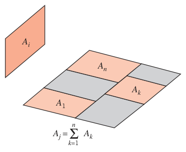
第二条关系处理发射面是复合面的情形。给式 (13.5) 两边乘 \(A_i\)，对每一项用互易关系 \(A_iF_{ik} = A_kF_{ki}\)：
式 (13.6)、(13.7) 用于"发射面由几块拼成"的场合——复合面对 i 的视角系数，是各部分对 i 的视角系数按面积加权平均。
数值视角系数的对账。复杂几何下式 (13.1) 可能积不出来，只能数值计算；几百上千个辐射面的结构，数值视角系数本身会带误差。这时候：用式 (13.3) 逐对检查互易关系是否满足，用式 (13.4) 检查能量守恒是否成立——两条恒等式就是你的"对账单"。
【例 13.1】小平面正对圆盘的视角系数
已知（Known）：一块直径 \(D\)、面积 \(A_j\) 的漫射圆盘，与一块 \(A_i \ll A_j\) 的平面漫射表面平行；\(A_i\) 位于圆盘中心轴上、距圆盘中心 \(L\) 处。
求（Find）：\(A_i\) 对圆盘的视角系数 \(F_{ij}\)。
示意图（Schematic）：
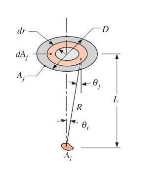
假设（Assumptions）：1. 漫射表面；2. \(A_i \ll A_j\)；3. 表面 \(A_i\) 上有效辐射均匀。
分析（Analysis）：从式 (13.1) 出发：
因为 \(A_i\) 很小，\(\theta_i\)、\(\theta_j\)、\(R\) 在 \(A_i\) 上几乎不随位置变化，对 \(dA_i\) 的积分直接变成乘 \(A_i\)：
其中用了 \(\theta_i = \theta_j = \theta\)（两点连线对双方法线的夹角相同）。在圆盘上取半径 \(r\) 处的环带：\(R^2 = r^2 + L^2\)，\(\cos\theta = L/R\)，\(dA_j = 2\pi r\, dr\)，于是
点评（Comments）：
- 式 (13.8) 可以定量描述图 13.5 中 \(r_i \to 0\)（下圆盘缩成一点）时曲线的渐近行为。
- 这是能用式 (13.1) 亲手积出视角系数的最简单几何之一；积分更繁琐的构形见视角系数手册。
【例 13.2】三个几何的视角系数
已知（Known）：三个几何：(1) 直径 \(D\) 的球放在边长 \(L = D\) 的立方箱内；(2) 长方形截面 duct 内对角隔板的一侧；(3) 长度与直径相等的圆管。
求（Find）：各几何的 \(F_{12}\) 与 \(F_{21}\)。
示意图（Schematic）：
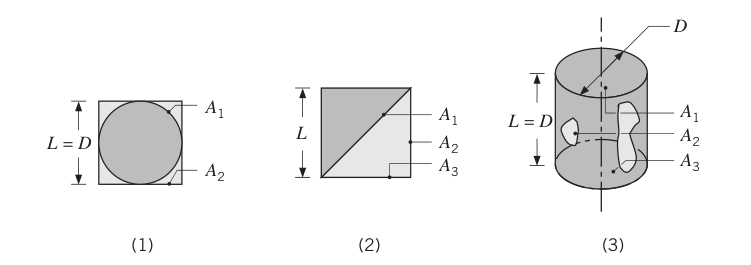
假设（Assumptions）：漫射表面，有效辐射各自均匀。
分析（Analysis）：视角系数可以靠观察、互易关系、求和规则和图表拼出来。
- 立方箱中的球：观察得
由互易关系（\(A_1 = \pi D^2\) 球面，\(A_2 = 6L^2\) 箱内壁）：
- 方 duct 中的对角隔板：表面 1 是隔板朝右下面（三角形腔）的一侧，\(A_1 = L\sqrt{2}\)；表面 2、3 是这个三角形腔的两段壁，\(A_2 = A_3 = L\)（单位管长）。求和规则：
对称性给 \(F_{12} = F_{13}\)，于是
由互易关系：
- 圆管：表面 1 是管端圆盘，表面 2 是管侧面，表面 3 是另一端。查表 13.2 或图 13.5（共轴平行圆盘），取 \(r_3/L = 0.5\)、\(L/r_1 = 2\)：
求和规则（\(F_{11} = 0\)）：
由互易关系（\(A_1 = \pi D^2/4\)，\(A_2 = \pi DL\)）：
点评（Comments）：真实几何表面未必有均匀的有效辐射；非均匀有效辐射的后果在例 13.3 里展开讨论。
13.2 黑体表面间的辐射交换#
一般情况下，离开表面的辐射既有发射也有反射，到达第二个表面后还会被反射和吸收。但黑体把问题大幅简化：没有反射——离开只靠发射，来的全部吸收。
看图 13.8 的两个任意形状黑表面。记 \(q_{i \to j}\) 为离开表面 i、被表面 j 截住的速率：
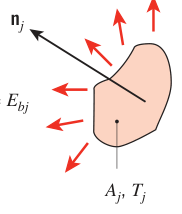
黑面的有效辐射就是发射功率（\(J_i = E_{bi}\)），所以
两表面间的净辐射交换定义为二者之差：
代入 \(E_b = \sigma T^4\)（式 12.32）并用互易关系 \(A_jF_{ji} = A_iF_{ij}\)，四项并成一项：
这就是 i 与 j 互动的结果：i 净流出的速率等于 j 净流入的速率。
对 \(N\) 个黑表面围成的封闭腔，表面 i 的净辐射流出等于它与其余各面交换之和：
一个记号说明：第 1、12 章把净辐射热流密度写作 \(q''_{\mathrm{rad}}\)，本章为了简洁把下标 rad 省掉。
【例 13.3】圆筒形炉腔的电功率分配
已知（Known）：一个炉腔，直径 50 mm、长 150 mm 的圆筒形，一端敞开，对 27°C 的大环境开放。腔底面独立加热，侧壁由三段环带独立加热。腔内所有表面近似黑体并维持 1650°C。电加热面的背面隔热良好。
求（Find）：底面需要输入的电功率；侧壁上、中、下三段各自的电功率。
示意图（Schematic）：
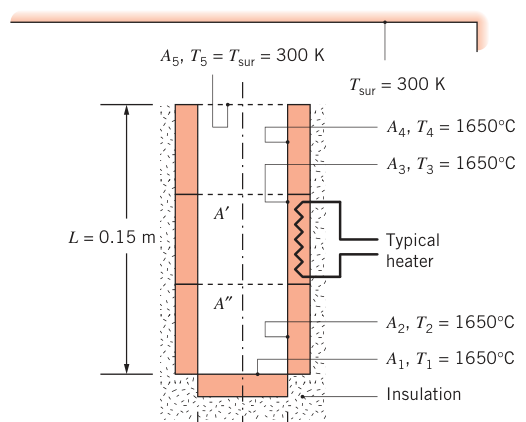
假设（Assumptions）：1. 腔内各表面按黑体处理，有效辐射与投入辐射均匀；2. 对流换热忽略；3. 电加热面背面绝热。
分析（Analysis）：在上述假设下，炉子的唯一散热途径是经开口的辐射。大环境足够大，其投入辐射等于 \(T_{sur}\) 下的黑体发射（12.7 节的结论）；而且炉腔与大环境的辐射交换必须穿过开口，所以可以把"炉腔对环境"的交换当成"炉腔对一个位于开口处的假想黑表面 5"的交换，\(T_5 = T_{sur}\)。每个面的电功率平衡掉它对应的辐射损失，损失由式 (13.14) 算。用互易关系把各式换成从假想面 5 出发的形式：
视角系数用两个假想面 \(A'\)（底面 + 下段侧壁的延长圆盘）和 \(A''\)（底面 + 下中两段侧壁的延长圆盘）搭桥，全部由表 13.2 的共轴圆盘公式（可加性拆分）给出：
- 以 \(r_i/L = r_j/L = 0.025/0.150 = 0.167\) 查得 \(F_{51} = 0.0263\)；
- 以 \(r_i/L = r_j/L = 0.025/0.100 = 0.25\) 查得 \(F_{5A'} = 0.0557\)，则 \(F_{52} = F_{5A'} - F_{51} = 0.0557 - 0.0263 = 0.0294\)；
- 以 \(r_i/L = r_j/L = 0.025/0.050 = 0.5\) 查得 \(F_{5A''} = 0.172\)，则 \(F_{53} = F_{5A''} - F_{5A'} = 0.172 - 0.0557 = 0.1163\)；
- 最后 \(F_{54} = 1 - F_{5A''} = 1 - 0.172 = 0.828\)。
开口面积 \(A_5 = \pi D^2/4 = \pi(0.05\ \mathrm{m})^2/4 = 0.00196\ \mathrm{m^2}\)，\(\sigma(T_1^4 - T_5^4) = 5.67 \times 10^{-8} \times (1923^4 - 300^4) = 7.75 \times 10^5\ \mathrm{W/m^2}\)（\(T_1 = 1650^\circ\mathrm{C} = 1923\ \mathrm{K}\)，\(T_5 = 300\ \mathrm{K}\)）。逐面算功率：
点评（Comments）：
- 把面 5 的视角系数加起来：\(F_{51} + F_{52} + F_{53} + F_{54} + F_{55} = 0.0263 + 0.0294 + 0.1163 + 0.828 + 0 = 1\)，求和规则（式 13.4）满足，说明视角系数算对了。（其实也可以反过来用求和规则定其中一个系数。）
- 炉子总辐射热损失 \(q_{tot} = q_1 + q_2 + q_3 + q_4 = 1522\ \mathrm{W} = 1.522\ \mathrm{kW}\)。如果把整个炉腔当成单一表面 f，损失可以一步算出：\(q_{tot} = A_5F_{5f}\sigma(T_f^4 - T_{sur}^4) = 0.00196 \times 1 \times 5.67 \times 10^{-8} \times (1923^4 - 300^4) = 1.522\ \mathrm{kW}\)——结果相同，因为 \(F_{5f} = 1 = F_{51} + F_{52} + F_{53} + F_{54} + F_{55}\)。
- 我们假设了每个表面等温、有效辐射与投入辐射均匀。黑体等温壁下 \(J_i = E_{bi}\)，均匀有效辐射的假设成立；但投入辐射并不均匀——例如环境那个"冷"开口对环带上部的影响比下部大。想知道侧壁的局部热流分布，就在侧壁上取环带微元 \(dA = \pi D\, dx\)，把式 (13.13) 两边除以 \(dA\)：
其中环带对开口的视角系数为
（\(x\) 从开口平面量起。）代入后得到下面这条热流分布曲线，并标出三段侧壁的平均热流 \(q''_2 = q_2/(\pi DL/3) = 5.69\ \mathrm{kW/m^2}\)、\(q''_3 = 22.5\ \mathrm{kW/m^2}\)、\(q''_4 = 160\ \mathrm{kW/m^2}\)：
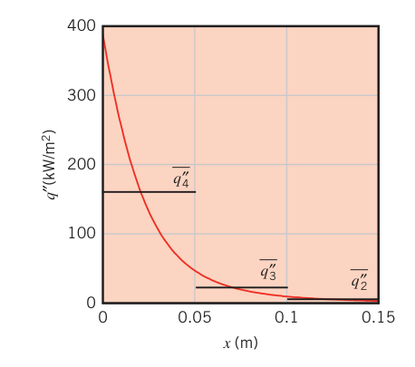
由于投入辐射沿侧壁不均匀，局部热流高度不均匀，最大值紧挨开口。要算局部温度或局部热流，就得把几何面细分成更多辐射面——解析细分如上，或数值细分；即使这么简单的几何，计算局部量也可能涉及成百上千个辐射面。
13.3 封闭腔内不透明漫灰表面间的辐射交换#
一般的不透明表面离开的辐射既有发射也有反射，到达第二个不透明表面后又被反射、吸收。在图 13.9a 这样的封闭腔里，辐射会在所有表面之间多次反射，每次都有一部分被吸收。直接追踪每一根射线的反射链条是不现实的——简化假定登场：
- 腔内每个表面等温，有效辐射与投入辐射各自均匀；
- 表面不透明（\(\tau = 0\)），发射率、吸收比、反射比与方向无关（漫射）、与波长无关（灰体）；
- 由 12.8 节，这些条件下基尔霍夫定律给出 \(\varepsilon = \alpha\)；
- 腔内介质不参与辐射。
问题通常是：每个表面的温度 \(T_i\) 或净辐射热流 \(q''_i\) 二者之一已知，求其余的未知热流与温度。
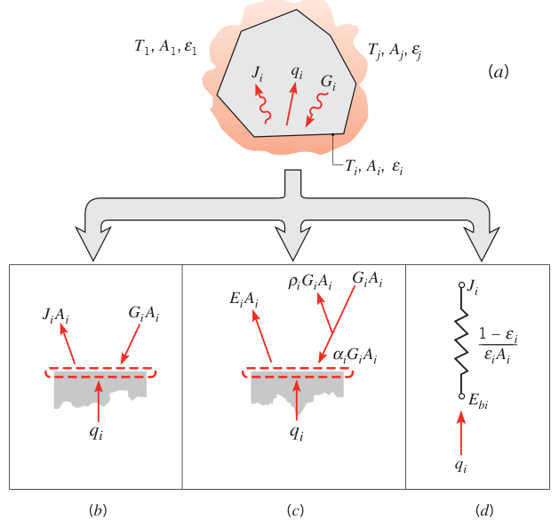
13.3.1 表面处的净辐射换热#
\(q_i\) 是离开表面 i 的净辐射速率——表面辐射收支的总效果（图 13.9b）。物理上它是"要让表面维持恒温，其他机制必须补给它的速率"。它是有效辐射与投入辐射之差，由式 (12.5)：
用有效辐射的定义（式 12.4，\(J_i = E_i + \rho_i G_i\)），并把不透明表面的 \(\rho_i = 1 - \alpha_i\) 代进去：
（这就是式 12.6 的速率版本，图 13.9c。）对不透明漫灰表面，\(E_i = \varepsilon_iE_{bi}\)、\(\alpha_i = \varepsilon_i\)，于是有效辐射可以写成：
解出 \(G_i\) 代回式 (13.15)：
式 (13.19) 是表面净辐射换热的标准形态（图 13.9d）：驱动势 \(E_{bi} - J_i\)，表面辐射热阻（surface radiative resistance）\((1 - \varepsilon_i)/(\varepsilon_i A_i)\)。黑体发射功率大于有效辐射，净换热流出表面；反之流入。
一个重要特例：某表面比其余表面大得多。比如小表面们待在一个大房间里，大表面的面积 effectively 无穷大（\(A_i \to \infty\)），它的表面热阻 \((1-\varepsilon_i)/(\varepsilon_iA_i) \to 0\)——和黑表面（\(\varepsilon_i = 1\)）一样。于是 \(J_i = E_{bi}\)：相对巨大的表面可以直接当黑体处理。
拓展：为什么大腔壁可以当黑体
12.7 节用物理图像论证过，现在网络法又从灰体交换的角度确认了它：大壁面虽然会反射一部分投入辐射，但它太大了，被反射的辐射大概率打到同一大壁面的另一点上，再被反射……多次反射之后，原来投到大壁面上的辐射全部被它自己吸收，一点也轮不到那些小表面。所以小表面面对的投入辐射就是大壁面温度下的黑体发射，大壁面的"有效黑度"与它自己的 \(\varepsilon\) 无关。例 13.3 里对大环境的处理正是这一结论。
13.3.2 表面之间的辐射换热#
要用式 (13.19)，得先知道有效辐射 \(J_i\)。它由封闭腔内各表面之间的交换决定。
表面 i 的投入辐射可以用腔内所有表面的有效辐射表示：从视角系数的定义出发，到达 i 的总速率为 \(A_iG_i = \sum_j F_{ji}A_jJ_j\)（包括 i 自己），用互易关系换成 \(\sum_j A_iF_{ij}J_j\)，除以 \(A_i\)：
代回式 (13.15)，再用求和规则 \(\sum_j F_{ij} = 1\) 把 \(\sum_j F_{ij}J_i\) 拆出来：
辐射网络法（radiation network approach）。式 (13.20) 把 \(q_i\) 写成 i 与各面之间分量 \(q_{ij}\) 之和。每个分量对应一个网络元件：驱动势 \((J_i - J_j)\)，空间热阻（space or geometrical resistance）\((A_iF_{ij})^{-1}\)（图 13.10）。把式 (13.19) 和 (13.20) 拼在一起：
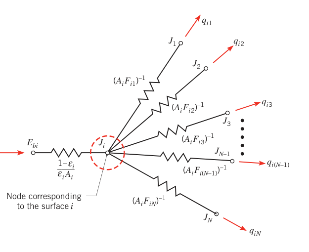
这就是有效辐射节点 i 处的辐射平衡：经表面热阻流入节点的"电流"，等于经各空间热阻从节点流出到所有其他表面的"电流"之和。
式 (13.21) 在表面温度 \(T_i\)（从而 \(E_{bi}\)）已知时最好用。但也常有反过来已知 \(q_i\)、求 \(T_i\) 的场合，那时把式 (13.20) 重排成平衡式更顺手：
拓展：辐射网络法的来历
把辐射交换画成电阻网络是 Oppenheim 在 1956 年提出的。它与第 3 章导热热阻的电路类比一脉相承：\(E_b = \sigma T^4\) 是"电源电位"，\(J\) 是节点电位，表面热阻 \((1-\varepsilon)/\varepsilon A\) 接在电源与节点之间，空间热阻 \(1/(AF)\) 接在节点与节点之间。电位、电流、欧姆定律全套照搬——复杂封闭腔一画网络就清晰。
直接法（direct approach）。另一条路不画网络：对每个已知 \(T_i\) 的表面写式 (13.21)，对每个已知 \(q_i\) 的表面写式 (13.22)，得到 \(N\) 个线性代数方程，解出 \(J_1, \dots, J_N\)；再用式 (13.19) 求已知温度表面的 \(q_i\) 或已知热流表面的 \(T_i\)。任意 \(N\) 的方程组都可以用第 4 章和附录 D 的迭代法或矩阵求逆解。
【例 13.4】红外加热器固化太阳能吸收板
已知（Known）：制造中，一块曲面太阳能吸收板（面积 \(A_2 = 15\ \mathrm{m^2}\)）上的特种涂层用红外加热器固化。加热器宽 \(W = 1\ \mathrm{m}\)，与吸收板各长 \(L = 10\ \mathrm{m}\)，相距 \(H = 1\ \mathrm{m}\)。吸收板上表面与加热器下表面均绝热。加热器 \(T_1 = 1000\ \mathrm{K}\)、\(\varepsilon_1 = 0.9\)；吸收板 \(T_2 = 600\ \mathrm{K}\)、\(\varepsilon_2 = 0.5\)。系统放在大房间里，房间壁面 300 K。
求（Find）：吸收板表面的净换热速率。
示意图（Schematic）：
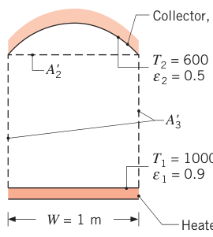
假设（Assumptions）：1. 稳态；2. 对流忽略；3. 加热板与吸收板漫灰，投入辐射与有效辐射各自均匀；4. 周围房间很大，按黑体处理。
分析（Analysis）：把系统看成三表面封闭腔：第三个表面就是 behaving 黑体的大房间。用网络法和直接法各解一遍。
网络法：先给每个表面立有效辐射节点（下图第 1 步），再把节点两两用空间热阻连起来（第 2 步），最后把各表面的黑体发射功率经表面热阻接到自己的节点上（第 3 步）。
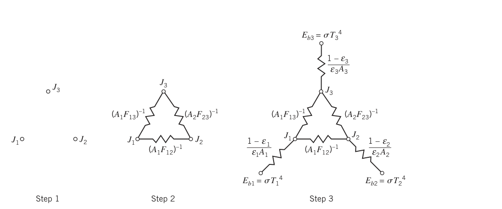
大房间的面积不确定，空间热阻 \((A_3F_{31})^{-1}\)、\((A_3F_{32})^{-1}\) 不好写——好在互易关系允许换成 \(A_3F_{31} = A_1F_{13}\)、\(A_3F_{32} = A_2F_{23}\)，这两个都好求。由假设 4，表面 3 的表面热阻为零，\(J_3 = E_{b3} = \sigma T_3^4 = 459\ \mathrm{W/m^2}\)。
视角系数：\(F_{12} = F_{12'}\)，其中 \(A_2'\) 是吸收板的矩形基底（\(1\ \mathrm{m} \times 10\ \mathrm{m}\)）。查图 13.4 或表 13.2，取 \(Y/L = 10/1 = 10\)、\(X/L = 1/1 = 1\)：
求和规则（\(F_{11} = 0\)）：
从表面 2 到表面 3 的辐射必须穿过假想面 \(A_2'\)，于是 \(A_2F_{23} = A_2'F_{2'3}\)，对称性 \(F_{2'3} = F_{13}\)：
在 \(J_1\) 节点汇总电流（两边除以 \(A_1\)）：
代入 \(E_{b1} = \sigma T_1^4 = 56{,}700\ \mathrm{W/m^2}\)：
在 \(J_2\) 节点同样处理（除以 \(A_2\)，\(E_{b2} = \sigma T_2^4 = 7348\ \mathrm{W/m^2}\)）：
其中 \(F_{21} = A_1F_{12}/A_2 = 10 \times 0.39/15 = 0.26\)：
联立式 (3)、(4) 解得 \(J_2 = 12{,}487\ \mathrm{W/m^2}\)。从网络上一眼读出吸收板的净换热速率：
净换热流入吸收板的速率为 \(q_{net} = -q_2 = 77.1\ \mathrm{kW}\)。
直接法：对三个表面各写式 (13.21)，用互易关系改写空间热阻、消去 \(A_3\)：
代面积、温度、发射率与视角系数，联立解得 \(J_1 = 51{,}541\ \mathrm{W/m^2}\)、\(J_2 = 12{,}487\ \mathrm{W/m^2}\)、\(J_3 = 459\ \mathrm{W/m^2}\)。对表面 2 写式 (13.19)：
与网络法结果完全一致，\(q_2 = -77.1\ \mathrm{kW}\)。
点评（Comments）：
- 联立求解式 (5)—(7) 时必须先把式 (7) 两边乘 \((1-\varepsilon_3)/(\varepsilon_3A_3) = 0\) 避免除零，得到简化形式 \(J_3 = \sigma T_3^4\)。
- 把 \(J_3 = \sigma T_3^4\) 代回式 (5)、(6)，它们与式 (1)、(2)（网络法的节点方程）逐字相同。
- 表面数 \(N \ge 4\) 时推荐直接法——网络画起来太复杂。
- 13.4 节会看到：当表面还有导热/对流换热时，网络法特别好用——那些能量就是进出节点的额外电流。
- 记住假想表面（\(A_2'\)）的妙用：它能大大简化视角系数的求取。
- 换个思路也行：离开表面 1 的辐射必须穿过开口（假想面 \(3'\)）才能到达大环境，于是 \(A_1F_{13} = A_1F_{13'} = A_{3'}F_{3'1}\)；对表面 2 同理 \(A_2F_{23} = A_{3'}F_{3'2}\)。用假想面 \(3'\) 的空间热阻替换连接节点 3 的空间热阻，网络不变、阻值相同，但视角系数可能更好查。表面 3 的表面热阻为零时，结论是：与大环境交换辐射的封闭腔开口，可以当作温度等于 \(T_{sur}\) 的不反射黑表面（\(\varepsilon_3 = 1\)）来处理。
- 加热器与吸收板上的投入辐射、有效辐射分布其实并不均匀。想检验结果，可以把它们再细分后重算。
13.3.3 两表面封闭腔#
最简单的封闭腔：两个表面只与彼此交换辐射（图 13.11a）。此时离开表面 1 的净辐射必等于进入表面 2 的净辐射，二者都等于 1、2 之间的净交换：
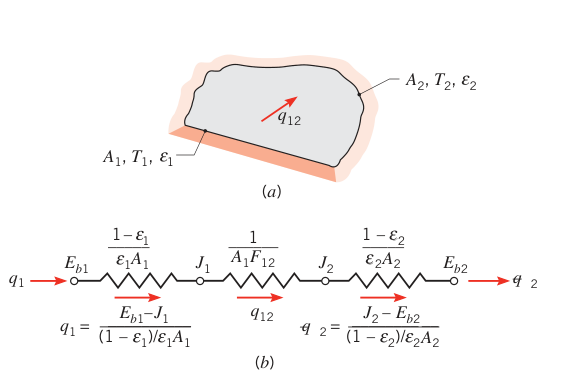
从网络（图 13.11b）看，1 到 2 的总热阻 = 表面热阻 + 空间热阻 + 表面热阻，三项串联。代入 \(E_b = \sigma T^4\)：
任何"两个等温漫灰表面组成封闭腔、各自有效辐射与投入辐射均匀"的场合都适用。重要的特例汇总在表 13.3。
表 13.3 特殊的漫灰两表面封闭腔（Special Diffuse, Gray, Two-Surface Enclosures，截自原书 Table 13.3）
| 几何 | 面积比与视角系数 | 净换热公式 |
|---|---|---|
| 大（无限大）平行平板 | \(A_1 = A_2 = A\)；\(F_{12} = 1\) | \(q_{12} = \dfrac{A\sigma(T_1^4 - T_2^4)}{1/\varepsilon_1 + 1/\varepsilon_2 - 1}\)（式 13.24） |
| 长（无限长）同心圆柱 | \(A_1/A_2 = r_1/r_2\)；\(F_{12} = 1\) | \(q_{12} = \dfrac{\sigma A_1(T_1^4 - T_2^4)}{1/\varepsilon_1 + \dfrac{1-\varepsilon_2}{\varepsilon_2}\Big(\dfrac{r_1}{r_2}\Big)}\)（式 13.25） |
| 同心球 | \(A_1/A_2 = r_1^2/r_2^2\)；\(F_{12} = 1\) | \(q_{12} = \dfrac{\sigma A_1(T_1^4 - T_2^4)}{1/\varepsilon_1 + \dfrac{1-\varepsilon_2}{\varepsilon_2}\Big(\dfrac{r_1}{r_2}\Big)^2}\)（式 13.26） |
| 大腔内的小凸物体 | \(A_1/A_2 \approx 0\)；\(F_{12} = 1\) | \(q_{12} = \sigma A_1\varepsilon_1(T_1^4 - T_2^4)\)（式 13.27） |
注意式 (13.27)：小物体面对大腔时，交换速率与大腔的发射率 \(\varepsilon_2\) 无关——正是 13.3.1 节"大表面即黑体"的直接推论。
13.3.4 防辐射屏#
低发射率（高反射率）材料做的防辐射屏（radiation shield，国内教材亦称遮热板）可以压低两表面之间的净辐射换热。看图 13.12a：在两块大平行平板之间插一块屏（表面 3）。没有屏时，换热由式 (13.24) 给出；插入屏后多了两层阻力（图 13.12b），换热被压低。屏两侧的发射率可以不同（\(\varepsilon_{3,1} \ne \varepsilon_{3,2}\)，两侧的有效辐射当然也不同）。把所有热阻串起来（\(F_{13} = F_{32} = 1\)）：
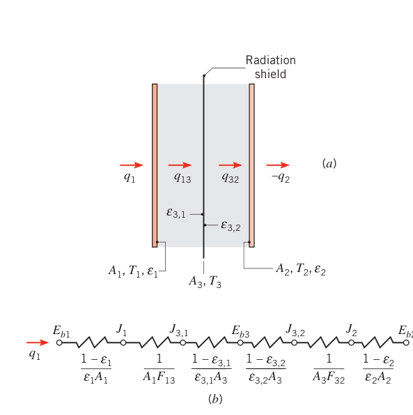
注意：\(\varepsilon_{3,1}\)、\(\varepsilon_{3,2}\) 很小时，屏的热阻变得非常大——这正是"低发射率屏"的价值所在。
式 (13.28) 在 \(T_1\)、\(T_2\) 已知时给出 \(q_{12}\)；再由 \(q_{12} = q_{13} = q_{32}\)，对 \(q_{13}\) 或 \(q_{32}\) 写式 (13.24)，就能解出屏温 \(T_3\)。
多块屏照此办理。所有发射率都相等的特殊情形下，\(N\) 块屏时：
其中 \((q_{12})_0\) 是无屏（\(N = 0\)）时的换热速率。
拓展：从遮热板到多层隔热
式 (13.29) 的 \(1/(N+1)\) 是多层隔热的理想极限：真空多层绝热（MLI，航天器与低温杜瓦里那种"金灿灿的包裹"）就是堆很多层镀铝薄膜，把辐射热流压到无屏时的几十分之一。两点提醒：一是理想公式要求各层发射率全等、层间真空且忽略层间导热，实际效果要打折扣；二是屏材料要低发射率、高反射率——吸收比大的屏会把自己晒热，再把热量发出去，屏蔽效果差。
【例 13.5】低温流体的辐射得热与遮热屏
已知（Known）：低温流体流过一根长管，管外径 20 mm，外表面漫灰，\(\varepsilon_1 = 0.02\)，\(T_1 = 77\ \mathrm{K}\)。它与一根 50 mm 直径的管同心，内表面漫灰，\(\varepsilon_2 = 0.05\)，\(T_2 = 300\ \mathrm{K}\)。两管之间抽真空。再在两管正中间插入一块直径 35 mm 的薄遮热屏，两侧 \(\varepsilon_3 = 0.02\)。
求（Find）：1. 低温流体单位管长的辐射得热；2. 插入遮热屏后得热的百分比变化。
示意图（Schematic）：
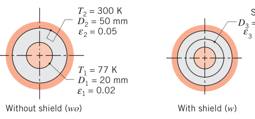
假设（Assumptions）：1. 表面漫灰，投入辐射与有效辐射各自均匀；2. 管间抽真空；3. 遮热屏的导热热阻忽略；4. 同心管构成两表面封闭腔（端部效应忽略）。
物性（Properties）：题给 \(\varepsilon_1 = 0.02\)、\(\varepsilon_2 = 0.05\)、\(\varepsilon_3 = 0.02\)（屏两侧相同）。
分析（Analysis）：
- 无屏：网络就是图 13.11 的三热阻串联，用式 (13.25)（\(F_{12} = 1\)，\(A_1/A_2 = D_1/D_2\)）：
负号表示热量流入内管（低温流体单位管长得热 0.50 W/m）。
- 带屏：网络是图 13.12 的五热阻串联：
同心几何下 \(F_{13} = F_{32} = 1\)，逐项代入：
得热变化的百分比：
一块屏把低温流体的辐射得热砍掉一半。
点评（Comments）：几何同心、发射率与温度在各自表面上均匀，因此每个表面的投入辐射与有效辐射分布均匀——把圆柱面再细分重算，结果不会变。（这正是表 13.3 类问题可以放心套公式的前提。）
13.3.5 再辐射面#
再辐射面（reradiating surface）是很多工业应用里的常用理想化：净辐射换热为零（\(q_i = 0\)）的表面。真实的背面良好隔热、正面（辐射面）对流又可忽略的表面就非常接近它。由式 (13.15) 和 (13.19)，\(q_i = 0\) 立刻给出：
即：再辐射面的有效辐射已知时，温度随手可得；它的平衡温度由腔内其他表面决定，与它自己的发射率无关。
三表面封闭腔、第三个表面 R 再辐射的情形见图 13.13。表面 R 背面绝热、正面无对流，\(q_R = 0\)，于是表面 1 的净辐射流出必等于流入表面 2 的净辐射。网络是简单的串—并联结构（图 13.13b），化简后：
注意分母中间那一项：\(J_1\) 到 \(J_2\) 有两条并联通道——直接通道 \(1/(A_1F_{12})\)，和经 \(J_R\) 中转的通道 \((1/A_1F_{1R}) + (1/A_2F_{2R})\)。
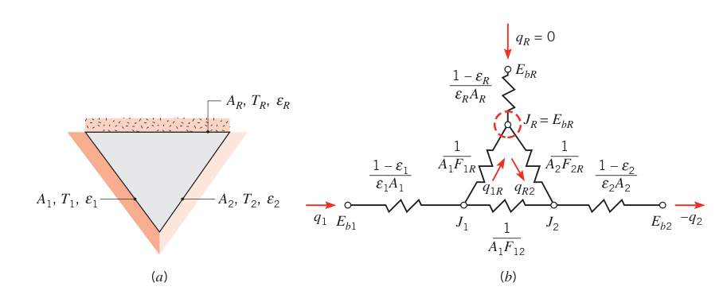
知道 \(q_1 = -q_2\) 后，对表面 1、2 用式 (13.19) 定出 \(J_1\)、\(J_2\)；再由再辐射面的辐射平衡（流入 = 流出）：
解出 \(J_R\)，温度由 \(\sigma T_R^4 = J_R\) 确定。
13.3.2 节的一般流程同样适用于含再辐射面的封闭腔：对每个再辐射面用式 (13.22) 且令 \(q_i = 0\) 即可。
拓展：再辐射面的温度为什么与发射率无关
直觉是这样的：\(q_R = 0\) 要求"进 = 出"，即 \(G_R = J_R\)；而 \(J_R = \varepsilon_RE_{bR} + (1-\varepsilon_R)G_R\)，两条联立立刻逼出 \(J_R = E_{bR}\)——发射率 \(\varepsilon_R\) 在推导中自我消掉了。物理上，一个绝热面不管反射多强、发射多弱，它最终都会热到这样一个温度：它"转发"（反射 + 发射）出去的辐射恰好等于收到的辐射。这个温度由网络里别的表面"投票"决定（式 13.31），与它自己的物性无关。
【例 13.6】喷漆烘干炉：加热面功率与绝热面温度
已知（Known）：喷漆烘干炉是一个长三角形截面 duct：一个加热面维持 1200 K，另一个面绝热，第三个面是维持 500 K 的喷漆板。三角形边长 \(W = 1\ \mathrm{m}\)（等边）。加热面与绝热面发射率 0.8，喷漆板发射率 0.4。稳态运行。
求（Find）：1. 每单位 duct 长度需要向加热面供给的能量速率；2. 绝热面的温度。
示意图（Schematic）：
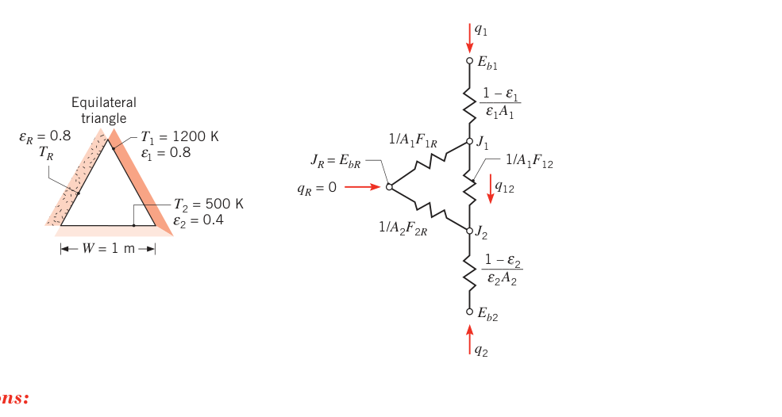
假设（Assumptions）：1. 稳态；2. 所有表面不透明、漫灰，有效辐射与投入辐射各自均匀；3. 对流忽略；4. 表面 R 再辐射；5. 端部效应忽略。
分析（Analysis）：
- 系统是"三表面封闭腔 + 一个再辐射面"。由对称性，\(F_{12} = F_{1R} = F_{2R} = 0.5\)；\(A_1 = A_2 = W \cdot L\)（\(L\) 为 duct 长）。加热功率由式 (13.30) 给出：
分母三项分别为 0.25 m、1.333 m（\(= 1/[0.5 + 0.25]\)）、1.5 m（单位管长），合计 3.083 m：
- 绝热面温度由 \(J_R = E_{bR}\) 确定，\(J_R\) 由式 (13.31) 求出——但这要先知道 \(J_1\)、\(J_2\)。对表面 1、2 写表面能量平衡式 (13.19)：
代入式 (13.31)（两块空间热阻都是 \(1/(W \cdot 0.5) = 2\ \mathrm{m^{-1}}\)）：
点评（Comments）：
- 直觉上，再辐射面靠近表面 1 的区域应当更热、靠近表面 2 的区域更冷——直觉对应的事实是投入辐射与有效辐射分布并不均匀，这也动摇了假设 2。想算再辐射面的温度分布，得按例 13.3 点评 3 的思路细分。不过若每个几何面细分成 10 块，视角系数就要 \((3 \times 10)^2 = 900\) 个——精度与计算量之间要权衡。
- 结果与 \(\varepsilon_R\) 的取值无关。
- 本题也能用直接法：先解三个未知有效辐射 \(J_1\)、\(J_2\)、\(J_R\)。控制方程是对已知温度的表面 1、2 写式 (13.21)，对再辐射面写式 (13.22)（\(q_R = 0\)）：
（表面热阻：\((1-0.8)/(0.8 \times 1) = 0.25\ \mathrm{m^{-1}}\)、\((1-0.4)/(0.4 \times 1) = 1.5\ \mathrm{m^{-1}}\)；空间热阻：\(1/(A_iF_{ij}) = 1/(1 \times 0.5) = 2\ \mathrm{m^{-1}}\)；\(E_{b1} = \sigma T_1^4 = 117{,}573\ \mathrm{W/m^2}\)、\(E_{b2} = 3544\ \mathrm{W/m^2}\)。）联立解得
由 \(\sigma T_R^4 = J_R\)：
两种方法结果一致（中间值的细微差别来自把 \(q_1'\) 圆整成 37 kW/m）。
13.4 多模式换热#
到目前为止，封闭腔里的辐射换热都是在导热、对流可忽略的前提下算的。但很多应用中，对流和/或导热与辐射同量级，必须一起分析。
看图 13.14a 的一般表面条件：除了与封闭腔其他表面的辐射交换，表面可能还有外部加热（比如电加热），同时以对流和导热的方式传出热量。表面能量平衡给出：
其中 \(q_{i,rad}\)（离开表面的净辐射速率）用本章的标准流程确定：一般情形用式 (13.19) 或 (13.20)；特例如两表面封闭腔用式 (13.23)、三表面含再辐射面用式 (13.30)。辐射网络里的表面元件相应改成图 13.14b：\(q_{i,ext}\)、\(q_{i,cond}\)、\(q_{i,conv}\) 是进出表面节点的额外电流。注意区别：\(q_{i,cond}\)、\(q_{i,conv}\) 与温差成正比，\(q_{i,rad}\) 与四次方差成正比。表面背面绝热时 \(q_{i,cond} = 0\)；没有外部加热、对流又可忽略时，这个面就是再辐射面。
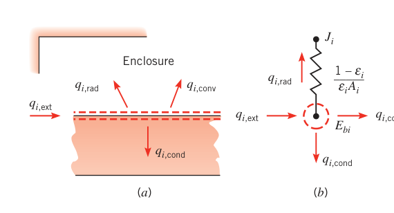
【例 13.7】半圆管空气加热器
已知（Known）：一台空气加热器由半圆形管组成：平面（切面）维持在 1000 K，曲面绝热良好。管半径 20 mm，两表面发射率均为 0.8。1 atm 的空气以 \(\dot m = 0.01\ \mathrm{kg/s}\)、\(T_m = 400\ \mathrm{K}\) 流过管内。
求（Find）：维持平面表面 1000 K 所需的单位长度供热速率；绝热面温度。
示意图（Schematic）：
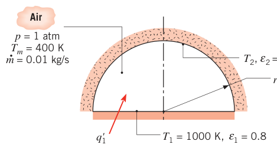
假设（Assumptions）：1. 稳态；2. 漫灰表面，投入辐射与有效辐射各自均匀；3. 管端部效应与气体温度的轴向变化忽略；4. 充分发展流动。
物性（Properties）：表 A.4，空气（1 atm，400 K）：\(k = 0.0338\ \mathrm{W/(m \cdot K)}\)，\(\mu = 230 \times 10^{-7}\ \mathrm{kg/(s \cdot m)}\)，\(c_p = 1014\ \mathrm{J/(kg \cdot K)}\)，\(Pr = 0.69\)。
分析（Analysis）：半圆曲面绝热又无外部加热，它的表面能量平衡只剩两项：
管子构成两表面封闭腔，\(q_{2,rad}\) 用式 (13.23) 算，其中 \(F_{12} = 1\)；单位管长 \(A_1 = 2r_o\)（平面）、\(A_2 = \pi r_o\)（半圆面）。把表面 2 的能量平衡两边除以 \(A_1\)：
水力直径 \(D_h = 4A_c/P = 2\pi r_o/(\pi + 2) = 0.0244\ \mathrm{m}\)，雷诺数
由 Dittus–Boelter 关联式：
代回能量平衡（\(A_1/A_2 = 2/\pi\)）：
试差解得
再对加热面做能量平衡：
单位管长：
点评（Comments）：
- 各表面的投入辐射、有效辐射与对流热流密度沿表面并不均匀——绝热面靠近平面角落的区域会更热、拱顶更冷。要算分布就得细分表面、做多辐射面分析。
- 对空气微元控制体做能量平衡：\(dT_m/dx = q_1'/(\dot m c_p) = 2820\ \mathrm{W/m}/[0.01\ \mathrm{kg/s} \times 1014\ \mathrm{J/(kg \cdot K)}] = 278\ \mathrm{K/m}\)——空气温升显著。更合理的分析应沿轴向分区，允许各区空气温度与绝热面温度不同；那时两表面封闭腔的辐射分析也不再适用。
13.5 简化假定的适用性#
我们已经建立起预测表面间辐射换热的手段，但必须清楚这套分析的固有局限。回顾一下本章分析的理想化表面：等温、不透明、灰体、漫发射漫反射、有效辐射与投入辐射分布均匀；封闭腔内的介质不参与辐射——不吸收、不散射表面辐射，自身也不发射。
实际用起来：这些技术在很多场合能给出足够好的一估（first estimates），甚至就是够准的结果；但假定不合适时，就需要更精细的预测方法——那超出了本书范围，见更高级的辐射传热专著。
需要警惕的典型失效场景：表面温度或热流密度沿表面变化大（例 13.3、13.6、13.7 的点评都撞上了）、发射率随波长变化剧烈（选择性表面）、腔内介质参与辐射（下一节）。
13.6 与参与性介质的辐射换热#
除了 12.9 节的环境辐射，我们对气体辐射一直避而不谈，只处理不透明固液表面的辐射。对非极性分子（nonpolar gases）如 \(\mathrm{O_2}\)、\(\mathrm{N_2}\)，这种忽略完全正当：它们不发射辐射，对入射热辐射也基本透明。但极性分子（polar molecules）如 \(\mathrm{CO_2}\)、\(\mathrm{H_2O}\)（蒸气）、\(\mathrm{NH_3}\) 和碳氢气体，在很宽的温度范围内发射并吸收辐射。这类气体带来两个新麻烦：一是辐射不像固液那样随波长连续分布，而是集中在特定的波段（bands）里；二是气体辐射不是表面现象，而是体积现象。
13.6.1 体积吸收#
光谱辐射在气体（或半透明液体、固体）中的吸收由吸收系数（absorption coefficient）\(\kappa_\lambda\)（单位 1/m）和介质厚度 \(L\) 决定（图 13.15）。强度 \(I_{\lambda,0}\) 的单色光束入射到介质上，穿越厚 \(dx\) 的无穷薄层后强度的衰减为：
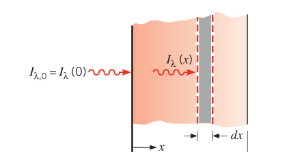
分离变量、对整层积分（设 \(\kappa_\lambda\) 与 \(x\) 无关）：
这种指数衰减叫比尔定律（Beer's law），是近似辐射分析里的趁手工具。定义光谱透射比：
则光谱吸收比为：
若基尔霍夫定律可用（\(\varepsilon_\lambda = \alpha_\lambda\)），式 (13.36) 同时给出介质的光谱发射率。
13.6.2 气体的发射与吸收#
一个常见的工程计算是"气体向相邻表面发多少辐射"。这类计算本该纠缠于光谱与方向效应，但 Hottel 提出了一套简化流程：考虑一个温度 \(T_g\) 的半球形气体质量，向其底面中心处的表面微元 \(dA_1\) 发射。单位表面积上的气体发射为：
其中气体发射率 \(\varepsilon_g\) 由实验数据关联得到——它是气体温度 \(T_g\)、总压 \(p\)、辐射组分分压 \(p_g\)、半球半径 \(L\) 的函数。
水蒸气的发射率见图 13.16（总压 1 atm、不同 \(p_w L\) 乘积值下对 \(T_g\) 作图）。总压不是 1 atm 时，查出的发射率要乘图 13.17 的修正因子 \(C_w\)。二氧化碳的结果类似，见图 13.18 与 13.19。
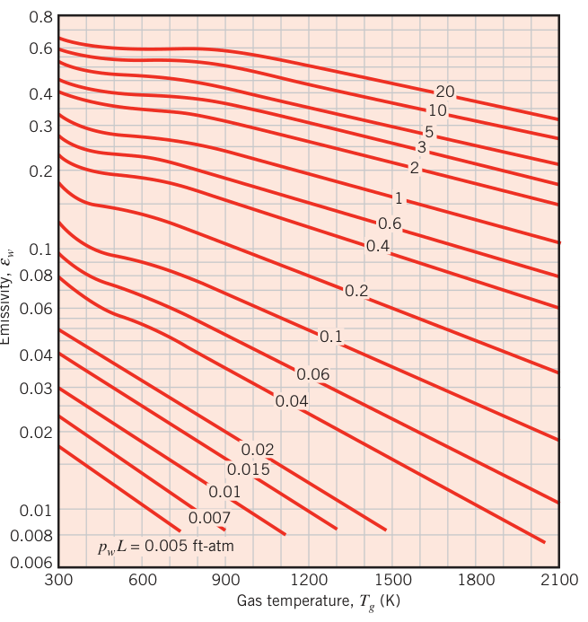
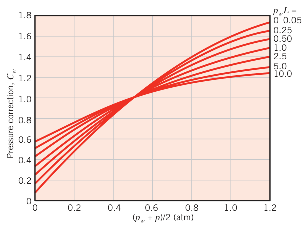
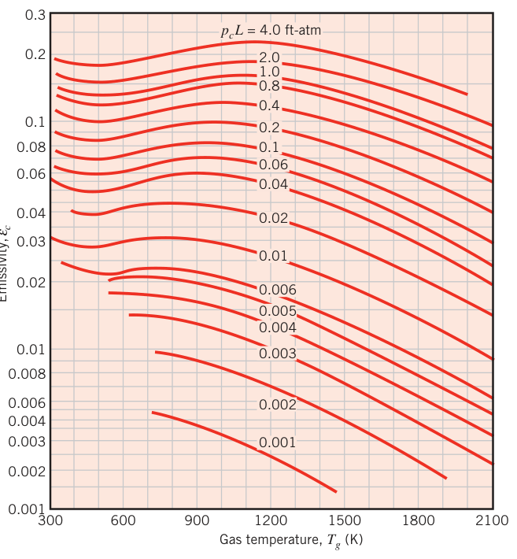
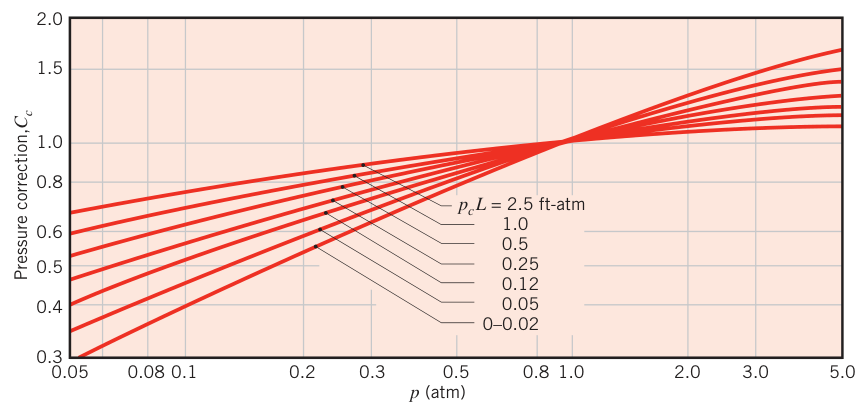
以上是水蒸气、二氧化碳分别与非辐射气体混合的结果。两者同时出现在混合气里时，总气体发射率为：
修正因子 \(\Delta\varepsilon\) 查图 13.20（按气体温度和 \(L(p_w + p_c)\) 取值），它补偿两组分互相吸收造成的发射减少。
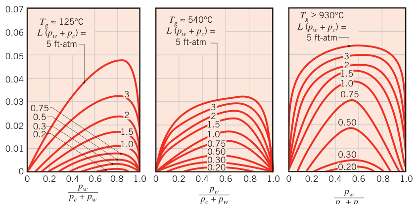
上面都默认半球形气体（半径 \(L\)）向底面中心发射。其他气体几何用平均射线行程（mean beam length）\(L_e\) 换算：\(L_e\) 是"与所论几何发射率等效的半球半径"，一个参数同时概括几何的尺寸与形状对发射的影响。常见几何的 \(L_e\) 列在表 13.4；把图 13.16—13.20 里的 \(L\) 换成 \(L_e\) 就能用了。
表 13.4 各种气体几何的平均射线行程 \(L_e\)（截自原书 Table 13.4）
| 几何特征 | 特征长度 | \(L_e\) |
|---|---|---|
| 球（对表面辐射） | 直径 \(D\) | \(0.65D\) |
| 无限长圆柱（对曲面辐射） | 直径 \(D\) | \(0.95D\) |
| 半无限长圆柱（对底面辐射） | 直径 \(D\) | \(0.65D\) |
| 高与直径相等的圆柱（对整个表面辐射） | 直径 \(D\) | \(0.60D\) |
| 无限大平行平板（对平板辐射） | 板间距 \(L\) | \(1.80L\) |
| 立方体（对任意表面辐射） | 边长 \(L\) | \(0.66L\) |
| 体积 \(V\) 的任意形状（对面积 \(A\) 的表面辐射） | 体积面积比 \(V/A\) | \(3.6V/A\) |
有了 \(L_e\) 和图 13.16—13.20，就能算气体发射带给相邻表面的辐射热流：
\(A_s\) 是表面积。黑表面当然全部吸收这份辐射，但它自己也发射，所以黑表面与气体（\(T_s\)、\(T_g\)）之间的净交换速率为：
水蒸气与二氧化碳的气体吸收比 \(\alpha_g\) 由发射率按下面的式子折算：
水蒸气：
二氧化碳：
\(\varepsilon_w\)、\(\varepsilon_c\) 仍查图 13.16、13.18，\(C_w\)、\(C_c\) 查图 13.17、13.19——但注意：查图时把 \(T_g\) 换成 \(T_s\)，把 \(p_wL_e\)、\(p_cL_e\) 换成 \(p_wL_e(T_s/T_g)\)、\(p_cL_e(T_s/T_g)\)。两组分同时在时：
\(\Delta\alpha = \Delta\varepsilon\) 由图 13.20 取。
拓展：为什么 O2 与 N2 透明，CO2 与 H2O 参与
分光镜下看分子：非极性的 \(\mathrm{O_2}\)、\(\mathrm{N_2}\) 是对称双原子分子，振动时正负电荷中心不分离、没有电偶极矩变化，与电磁波几乎不耦合——既不发射也不吸收热辐射。极性分子（\(\mathrm{CO_2}\)、\(\mathrm{H_2O}\)、\(\mathrm{NH_3}\)、碳氢气体）的振动与转动模式伴随电偶极矩变化，能在特定波长上发射和吸收光子——这就是"波段"的来源。工程后果：空气（\(\mathrm{N_2} + \mathrm{O_2}\)）可以当不参与介质；燃烧产物（含 \(\mathrm{CO_2}\)、\(\mathrm{H_2O}\)）不行，炉膛与燃气轮机的辐射换热必须计入气体辐射。
拓展：平均射线行程为什么好用
气体是体积现象，发射率本该取决于射线在气体里穿过的"平均路程"。Hottel 的聪明之处在于：对任意形状的气体团，总能找到一个半球半径 \(L_e\)，让"半球气体向底面中心发射"的公式直接套用——几何的复杂性被一个数打包。通用近似 \(L_e = 3.6V/A\) 对任意凸形气体团都够用（表 13.4 最后一行），比如边长 \(L\) 的立方体：\(3.6L^3/(6L^2) = 0.6L\)，与精确值 \(0.66L\) 相近。
13.7 小结#
本章专注一件事：封闭腔各表面之间的辐射换热怎么算。核心工具是视角系数——它是决定任意两个漫射表面之间辐射交换的几何量，必须熟练掌握它的求取手段：观察、互易关系、求和规则、视角系数代数、公式表与图表。对等温、不透明、漫灰、有效辐射与投入辐射均匀的表面构成的封闭腔，你要会用两种方法做辐射计算：辐射网络法（Oppenheim 网络）与直接法（\(N\) 元线性方程组）。三块现成结论要随取随用：黑表面封闭腔（式 13.13、13.14）、两表面封闭腔（式 13.23 及表 13.3）、含再辐射面的三表面封闭腔（式 13.30）。防辐射屏把热阻成倍垫高（式 13.28、13.29）。最后记住：有效辐射或投入辐射分布不均匀时，需要细分成很多表面才能算出局部温度与局部热流——均匀性假定是整套方法的地基。
原书章末自测问题（13.7 节复习用）
- 什么是视角系数？计算两表面间的视角系数通常伴随哪些假定？
- 视角系数的互易关系是什么？求和规则是什么？
- 表面对自身的视角系数可能非零吗？什么样的表面会这样？
- 什么是不参与性介质？
- 把封闭腔内不能按黑体处理的表面之间的辐射交换列式时，隐含了哪些假定？这些假定的合理性如何、最容易在哪里失效？
- 封闭腔中某表面的辐射热阻如何定义？把它与表面净辐射换热速率联系起来的驱动势是什么？表面可按黑体处理时该热阻是多少？
- 封闭腔中两表面之间的几何（空间）热阻如何定义？与它配套的驱动势是什么？
- 什么是防辐射屏？介入一块屏对两表面间的净辐射换热有什么影响？屏的表面吸收比大有利还是反射比大有利？
- 什么是再辐射面？什么条件下一个表面可以近似为再辐射面？再辐射面的有效辐射、黑体发射功率与投入辐射之间是什么关系？这种表面的温度依赖它自己的辐射物性吗？
- 封闭腔中某表面的净辐射换热恰好被它对腔内气体的对流换热所平衡——对此能说什么？这个面是再辐射面吗？它的背面绝热吗？
- 封闭腔中某表面的净辐射流出大于它对腔内气体的对流换热——表面上还必然发生哪些过程（独立或联合）？
- 分子的哪些特征使气体不发射、不吸收辐射？哪些特征让气体能发射和吸收辐射？
- 气体的发射与吸收和不透明固体相比，有哪些不同？
- 辐射在半透明介质中传播时，强度随传播距离如何变化？吸收系数很大时能说什么？很小时呢？
坑与陷阱#
8 个容易踩的坑
- 互易关系互换的是 \(AF\)，不是 \(F\)：\(A_iF_{ij} = A_jF_{ji}\)，两个表面的视角系数一般不相等。例 13.4 里大房间的 \((A_3F_{31})^{-1}\) 写不出来，正是靠互易换成 \(1/(A_1F_{13})\) 才落地——列空间热阻时先问一句"哪一对 \(AF\) 是已知的"。
- 求和规则只对封闭腔成立：\(\sum_j F_{ij} = 1\) 的前提是"离开 i 的辐射全部被腔内表面接住"。开口必须补一个 \(T = T_{sur}\) 的黑假想面才能凑成封闭腔（例 13.3、13.4 的标准操作）；对孤立表面硬写 \(\sum F = 1\) 是错的。
- 两表面封闭腔别漏中间那项：式 (13.23) 是三个热阻串联——两个表面热阻 \((1-\varepsilon)/(\varepsilon A)\) 加一个空间热阻 \(1/(A_1F_{12})\)。只记得"平行平板公式 \(1/\varepsilon_1 + 1/\varepsilon_2 - 1\)"就到处套，同心几何（式 13.25、13.26）会立刻出错——那里是 \((1-\varepsilon_2)/\varepsilon_2 \times (r_1/r_2)\) 或其平方，没有 \(-1\)。
- 遮热屏贡献两个热阻：屏两侧发射率不同（\(\varepsilon_{3,1} \ne \varepsilon_{3,2}\)）时，屏提供 \((1-\varepsilon_{3,1})/(\varepsilon_{3,1}A_3) + (1-\varepsilon_{3,2})/(\varepsilon_{3,2}A_3)\) 两项（式 13.28）。"\(N\) 块屏降为 \(1/(N+1)\)"（式 13.29）只在所有发射率全等的理想条件下成立，别拿它硬算两表面发射率不同的组合。
- 再辐射面不是"不参与"：\(q_R = 0\) 只说明净流量为零，它照样参与辐射平衡并改变 \(q_{12}\)——式 (13.30) 的并联支路就是它架起来的。它的温度 \(T_R = (J_R/\sigma)^{1/4}\) 由别的表面决定，与自身 \(\varepsilon_R\) 无关（例 13.6 点评 2）。
- 网络方程线性，驱动势却是 \(T^4\)：未知量是 \(J\)（线性方程好解），但 \(E_b = \sigma T^4\) 是四次方。混合边界条件（有的面已知 \(T\)、有的面已知 \(q\)）要分别用式 (13.21) 与 (13.22)；\(\varepsilon = 1\) 的表面会让式 (13.21) 出现 0/0——两边乘 \((1-\varepsilon)/(\varepsilon A) = 0\) 化简成 \(J = E_b\)（例 13.4 点评 1）。
- 查图表先换无量纲参数：图 13.4—13.6 的横轴与曲线参数是 \(X/L\)、\(r_j/L\) 这类无量纲组合，落点在两条曲线之间要插值。复合几何要像例 13.4 那样先用假想面查 \(F_{12'}\)，再用面积比换算 \(F_{23}\)——直接对着曲面查是查不到的。
- 气体辐射不是表面现象：发射率随 \(p_gL_e\)（分压 × 行程）增大， Beer 定律的 \(\kappa_\lambda\) 单位是 1/m；Hottel 图查出 \(\varepsilon\) 后别忘总压修正 \(C_w\)、\(C_c\) 与混合修正 \(\Delta\varepsilon\)；算吸收比 \(\alpha_g\) 时图上查的是 \(T_s\) 与 \(p_gL_e(T_s/T_g)\)——两把温度尺子别拿混。
速览#
- 视角系数 \(F_{ij}\)：离开 i 的辐射被 j 截住的份额；由式 (13.1) 的双重积分定义，前提是漫发射、漫反射、有效辐射均匀。
- 两条恒等式：互易 \(A_iF_{ij} = A_jF_{ji}\)；封闭腔求和 \(\sum_{j=1}^N F_{ij} = 1\)。\(N\) 表面共 \(N^2\) 个视角系数，只需直接确定 \(N(N-1)/2\) 个。
- 可加性：\(F_{i(j)} = \sum_k F_{ik}\)（接收面拆分）；\(A_jF_{(j)i} = \sum_k A_kF_{ki}\)（发射面拆分，按面积加权）。
- 黑体交换：\(q_{ij} = A_iF_{ij}\sigma(T_i^4 - T_j^4)\)（式 13.13）；黑体封闭腔 \(q_i = \sum_j A_iF_{ij}\sigma(T_i^4 - T_j^4)\)（式 13.14）。
- 两大热阻：表面热阻 \((1-\varepsilon_i)/(\varepsilon_iA_i)\)（驱动势 \(E_{bi} - J_i\)）；空间热阻 \((A_iF_{ij})^{-1}\)（驱动势 \(J_i - J_j\)）。节点方程：式 (13.21)（已知 \(T_i\)）与 (13.22)（已知 \(q_i\)）。
- 黑面与大面：\(\varepsilon = 1\) 或 \(A_i \to \infty\) 时表面热阻为零、\(J_i = E_{bi}\)；大腔内小物体 \(q = \sigma A_1\varepsilon_1(T_1^4 - T_2^4)\)，与 \(\varepsilon_2\) 无关（式 13.27）。
- 两表面封闭腔（式 13.23）：平行平板、同心圆柱、同心球、小物体对大腔四个特例见表 13.3。
- 防辐射屏：两侧发射率可不同，屏贡献两项热阻（式 13.28）；\(N\) 块等发射率屏把换热压到 \(1/(N+1)\)（式 13.29）。
- 再辐射面：\(q_i = 0 \Rightarrow G_i = J_i = E_{bi}\)；三表面封闭腔化简成式 (13.30)，\(J_R\) 由式 (13.31) 定，\(T_R = (J_R/\sigma)^{1/4}\) 与 \(\varepsilon_R\) 无关。
- 多模式与气体：表面能量平衡 \(q_{i,ext} = q_{i,rad} + q_{i,conv} + q_{i,cond}\)（式 13.32）；气体吸收 \(I_\lambda = I_{\lambda,0}e^{-\kappa_\lambda L}\)（比尔定律）；Hottel 法 \(\varepsilon_g = \varepsilon_w + \varepsilon_c - \Delta\varepsilon\)，几何用平均射线行程 \(L_e\) 换算（表 13.4），黑面与气体净交换 \(q_{net} = A_s\sigma(\varepsilon_gT_g^4 - \alpha_gT_s^4)\)。
术语速查#
| 英文 | 中文 | 一句话 |
|---|---|---|
| view factor (configuration / shape factor) | 视角系数（角系数、构形因子） | 离开表面 i 的辐射被表面 j 截住的份额 \(F_{ij}\) |
| view factor integral | 视角系数积分 | 式 (13.1) 的双重面积分，几何量的源头 |
| reciprocity relation | 互易关系 | \(A_iF_{ij} = A_jF_{ji}\)，互换的是面积加权乘积 |
| summation rule | 求和规则 | 封闭腔内 \(\sum_j F_{ij} = 1\)，能量守恒的几何表述 |
| enclosure | 封闭腔 | 由若干表面围成、辐射跑不出去的分析区域 |
| self view factor \(F_{ii}\) | 自视角系数 | 凹面能看见自己，平面与凸面为零 |
| nonparticipating medium | 不参与性介质 | 不发射、不吸收、不散射辐射的介质（真空、多数气体） |
| participating medium | 参与性介质 | 与辐射相互作用的介质（\(\mathrm{CO_2}\)、\(\mathrm{H_2O}\) 等极性气体） |
| radiosity | 有效辐射 | 离开表面的全部辐射 \(J\)，网络节点电位（第 12 章定义） |
| surface radiative resistance | 表面辐射热阻 | \((1-\varepsilon_i)/(\varepsilon_iA_i)\)，接在 \(E_{bi}\) 与 \(J_i\) 之间 |
| space (geometrical) resistance | 空间热阻（几何热阻） | \((A_iF_{ij})^{-1}\)，接在两个有效辐射节点之间 |
| radiation network | 辐射网络 | Oppenheim 提出的电阻网络类比，封闭腔求解工具 |
| direct approach | 直接法 | 对各表面列式 (13.21)/(13.22)，联立解 \(N\) 元线性方程组 |
| two-surface enclosure | 两表面封闭腔 | 三热阻串联，式 (13.23)；特例见表 13.3 |
| radiation shield | 防辐射屏（遮热板） | 低发射率薄板，垫高热阻压低净辐射，式 (13.28)、(13.29) |
| reradiating surface | 再辐射面 | 净辐射为零的绝热面，\(G_i = J_i = E_{bi}\)，温度与自身 \(\varepsilon\) 无关 |
| multimode heat transfer | 多模式换热（复合换热） | 辐射与对流、导热在同一表面节点上做能量平衡 |
| hypothetical surface | 假想表面 | 为凑封闭腔或拆复合面而虚构的面，常按黑体处理开口 |
| absorption coefficient | 吸收系数 | \(\kappa_\lambda\)（1/m），表征介质对光谱辐射的体积吸收能力 |
| Beer's law | 比尔定律 | \(I_{\lambda,L} = I_{\lambda,0}e^{-\kappa_\lambda L}\)，辐射穿越介质的指数衰减 |
| band | 波段 | 气体发射/吸收集中的特定波长区间 |
| gas emissivity | 气体发射率 | \(\varepsilon_g\)，半球气体团发射 \(E_g = \varepsilon_g\sigma T_g^4\) 中的系数 |
| mean beam length | 平均射线行程 | \(L_e\)，与任意几何气体团等效的半球半径 |
| Hottel's method | 霍特尔方法 | 查图确定 \(\varepsilon_g\)、\(\alpha_g\) 的气体辐射工程算法 |